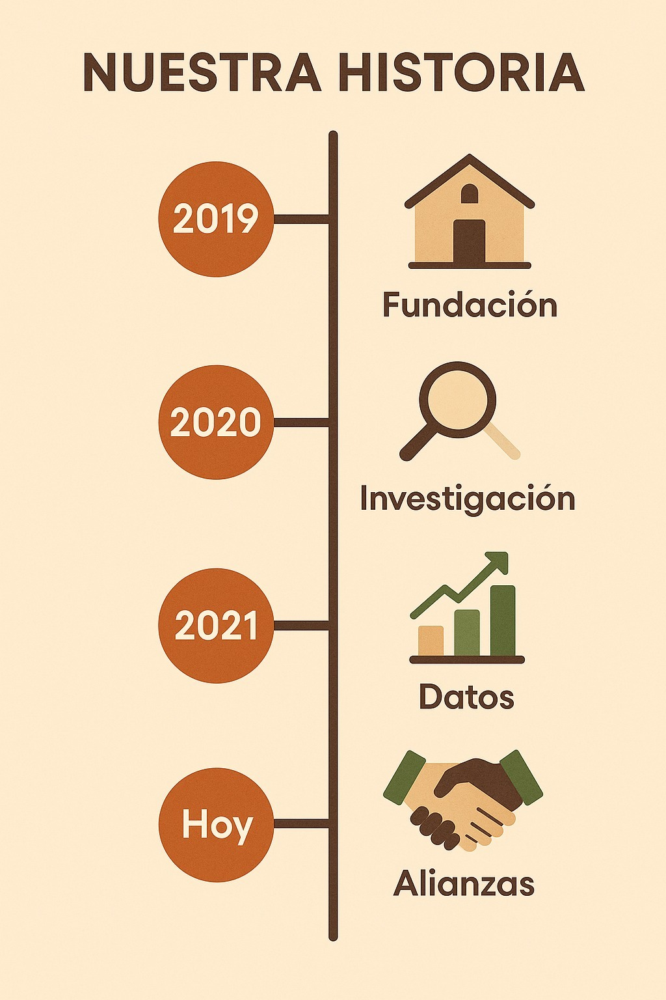
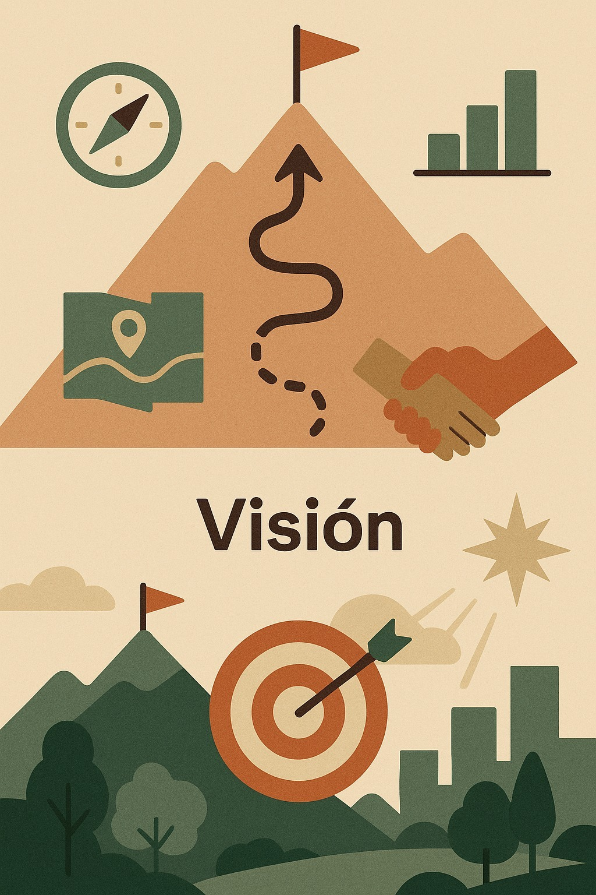
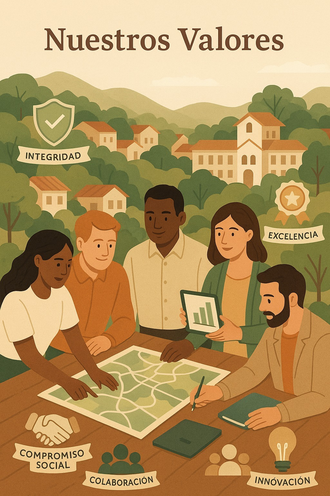
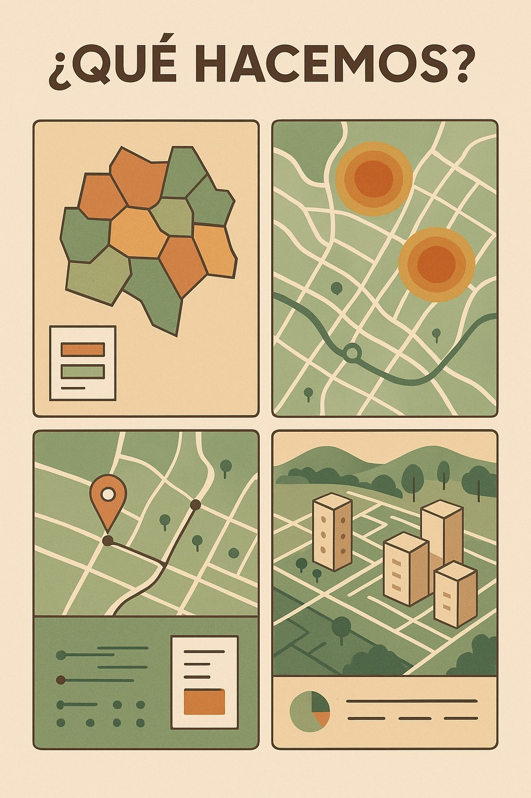
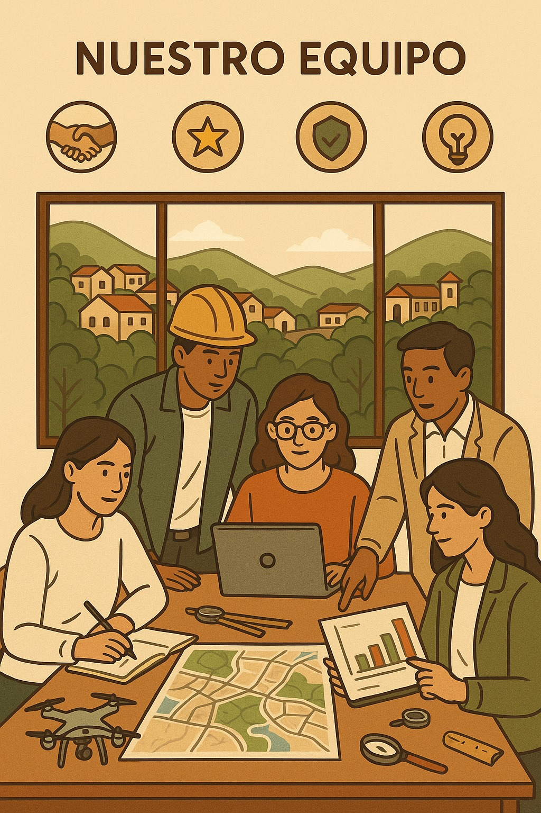

Acerca de Arborizadora Avanza
ARBORIZADORA AVANZA
En "Arborizadora Avanza", creemos que el conocimiento profundo es el primer paso para la transformación. Somos más que una empresa; somos un puente entre la realidad de un territorio y las decisiones que forjan su futuro. Nos dedicamos a comprender, analizar y comunicar la esencia del barrio Arborizadora Alta, un lugar con un potencial inmenso y desafíos complejos.

Arborizadora Avanza nació de la profunda convicción de que las soluciones más efectivas surgen del entendimiento del contexto real. Fundada en el corazón de Ciudad Bolívar, nuestra empresa se estableció con el propósito de llenar un vacío de información precisa y detallada sobre el barrio Arborizadora Alta. Desde nuestros inicios, nos hemos enfocado en el análisis de datos, la investigación social y la escucha activa de la comunidad, convirtiendo la información en una herramienta poderosa para el desarrollo.

- Misión: Nuestra misión es generar conocimiento riguroso y actualizado sobre las dinámicas sociales, económicas y de infraestructura del barrio Arborizadora Alta, proporcionando datos e insights estratégicos para que organizaciones, entidades gubernamentales y la propia comunidad puedan tomar decisiones informadas y sostenibles.
- Visión: Aspiramos a ser el referente en la investigación y el análisis territorial en Colombia, demostrando que una comprensión detallada de los barrios es fundamental para construir ciudades más equitativas, seguras y prósperas.

- Integridad: Actuamos con honestidad y transparencia.
- Compromiso Social: Priorizamos problemáticas que afectan la comunidad.
- Excelencia: Buscamos calidad y precisión en todo nuestro trabajo.
- Colaboración: Trabajo en equipo y alianzas estratégicas.
- Innovación: Adoptamos nuevas tecnologías y enfoques.

En Arborizadora Avanza, transformamos la información en acción. Realizamos estudios demográficos, análisis de seguridad, mapeo de problemáticas sociales y evaluaciones de infraestructura. Recopilación de datos, análisis y elaboración de informes detallados para tomar decisiones inteligentes.

Somos un grupo de profesionales apasionados por el análisis social y el desarrollo territorial. Desde sociólogos y economistas hasta urbanistas y expertos en datos, nuestro equipo combina diversas disciplinas para ofrecer una visión integral del barrio Arborizadora Alta.